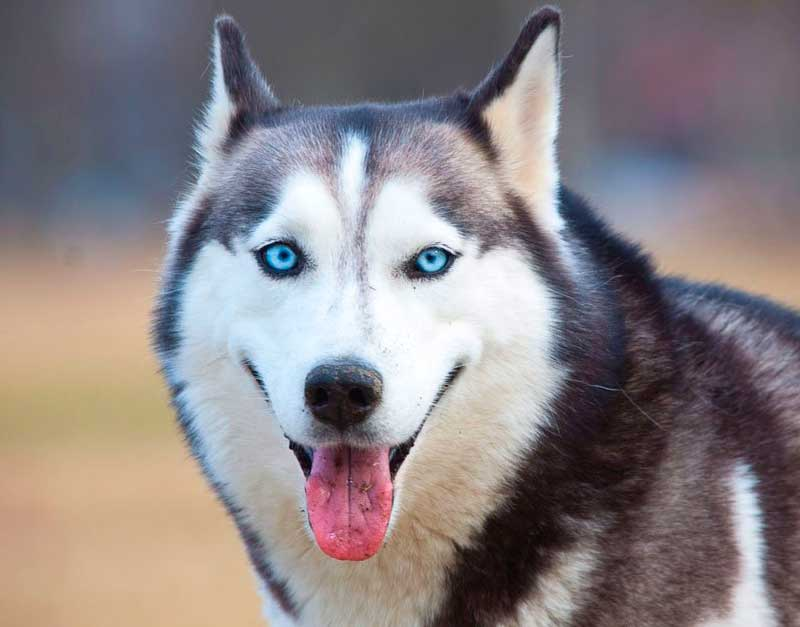

Собаки могут обнаружить болезнь у человека. Говоря о волшебном носе собаки, можно сказать, что их можно обучить определять такие заболевания, как рак и диабет у человека. При выявлении рака собака обучается чувствовать биохимические различия в дыхании тех, у кого диагностирована эта болезнь.
Источник фото